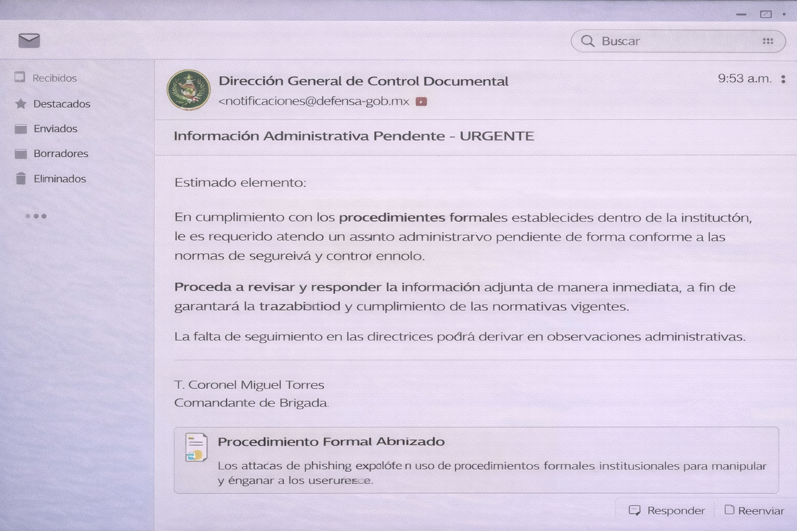

Bienvenido a la Guía Interactiva sobre Phishing
Te damos la bienvenida a esta guía interactiva sobre phishing, diseñada para ayudarte a comprender y prevenir uno de los riesgos más frecuentes en el entorno digital actual.

No necesitas conocimientos previos en informática o ciberseguridad. Esta guía está pensada para cualquier persona que utilice correo electrónico, redes sociales o servicios en línea.
Hoy en día, cualquier persona que utiliza internet para comunicarse trabajar o realizar trámites y puede convertirse en objetivo de ataques digitales. Por esta razón, es fundamental desarrollar conocimientos básicos de seguridad informática.
¿Cómo aprenderás?
- Explicaciones claras y estructuradas
- Ejemplos visuales realistas
- Actividades interactivas
¿Por qué es importante esta guía?
En la actualidad, muchos ataques informáticos no se basan en fallas técnicas, sino en engañar a las personas para que revelen información confidencial.

El phishing es una de las amenazas más utilizadas porque aprovecha:
- La confianza del usuario
- El desconocimiento
- La urgencia o presión psicológica
Muchas víctimas no son conscientes del ataque hasta que el daño ya ocurrió, lo que puede derivar en pérdida de información, acceso no autorizado o afectaciones económicas.
Objetivo y finalidad de la guía
El objetivo principal de esta guía es desarrollar en el usuario la capacidad de identificar, analizar y prevenir ataques de phishing en distintos entornos digitales.

Al finalizar esta guía, serás capaz de:
- Comprender qué es el phishing y cómo funciona
- Reconocer señales de alerta en mensajes sospechosos
- Analizar situaciones reales de intento de fraude
- Tomar decisiones seguras en entornos digitales
Esta guía no solo busca informar, sino fomentar el pensamiento crítico y la responsabilidad digital en el uso de tecnologías.
¿Por qué surge el phishing?
El phishing surge como consecuencia del crecimiento de los servicios digitales y del uso masivo de internet para realizar trámites, pagos y comunicaciones.
A medida que más personas utilizan plataformas en línea, los atacantes identifican oportunidades para explotar la confianza depositada en correos electrónicos, mensajes y sitios web.

Además, el phishing requiere pocos recursos técnicos, pero puede generar grandes beneficios económicos para los atacantes, lo que explica su alta frecuencia.
Factores que favorecen el phishing:
- Uso masivo del correo electrónico y servicios digitales
- Falta de conocimiento en ciberseguridad
- Confianza en mensajes aparentemente legítimos
- Facilidad para falsificar identidades digitales
Además, el phishing requiere pocos recursos técnicos, pero puede generar grandes beneficios económicos para los atacantes.
Ingeniería social
La ingeniería social es la base de la mayoría de los ataques de phishing. Consiste en manipular psicológicamente a una persona para que realice una acción sin analizarla de forma crítica.

Los atacantes aprovechan factores emocionales y conductuales para influir en las decisiones del usuario.
Principales técnicas utilizadas:
- Miedo (amenazas o bloqueos de cuenta)
- Urgencia (acciones inmediatas)
- Confianza (suplantación de entidades conocidas)
- Curiosidad (mensajes llamativos o engañosos)
Mensaje fraudulento
Es el contenido diseñado para engañar al usuario. Generalmente incluye alertas urgentes o amenazas.

Estos mensajes suelen imitar comunicaciones legítimas y utilizan estrategias psicológicas para generar confianza o urgencia.
Características comunes:
- Alertas de seguridad o bloqueo de cuenta
- Solicitudes urgentes de verificación
- Ofertas o premios falsos
- Enlaces o archivos adjuntos sospechosos
El objetivo es que el usuario actúe sin analizar el contenido, haciendo clic en enlaces o proporcionando información sensible.
Credenciales
Las credenciales son los datos que permiten autenticar la identidad de un usuario dentro de un sistema o plataforma digital.

En los ataques de phishing, las credenciales son uno de los principales objetivos, ya que permiten a los atacantes acceder directamente a cuentas personales o institucionales.
Ejemplos de credenciales:
- Contraseñas
- Nombres de usuario
- Códigos de verificación
- Tokens de seguridad
Una vez obtenidas, estas credenciales pueden ser utilizadas para suplantar la identidad del usuario y realizar acciones sin su consentimiento.
Email phishing
El email phishing es el tipo de phishing más común. Consiste en el envío de correos electrónicos falsos que aparentan ser enviados por empresas, bancos o instituciones legítimas.

Estos mensajes buscan engañar al usuario para que realice acciones como hacer clic en enlaces maliciosos o descargar archivos peligrosos.
Características comunes:
- Mensajes que aparentan ser oficiales
- Enlaces que redirigen a páginas falsas
- Solicitudes de datos personales o credenciales
- Errores ortográficos o formatos inusuales
Debido a su alcance masivo, este tipo de ataque afecta tanto a usuarios individuales como a organizaciones.
Smishing
El smishing es una variante del phishing que utiliza mensajes SMS para engañar al usuario y obtener información confidencial.

Estos mensajes suelen aparentar ser notificaciones importantes, como alertas bancarias, paquetes pendientes o promociones falsas.
Características comunes:
- Mensajes cortos con sentido de urgencia
- Enlaces acortados o sospechosos
- Solicitudes de verificación inmediata
- Números desconocidos o no oficiales
Debido al uso constante de dispositivos móviles, este tipo de ataque puede ser más efectivo y difícil de detectar.
Phishing en redes sociales
Este tipo de phishing se lleva a cabo a través de mensajes directos en redes sociales como Facebook, Instagram o WhatsApp, utilizando cuentas falsas o comprometidas.

Los atacantes se hacen pasar por amigos, compañeros de trabajo o páginas oficiales, enviando enlaces o archivos maliciosos.
Este método es peligroso porque el usuario suele bajar la guardia al creer que el mensaje proviene de alguien conocido.
Características comunes:
- Mensajes enviados por “amigos” o cuentas conocidas
- Enlaces sospechosos o acortados
- Promociones, premios o contenido llamativo
- Solicitudes de ayuda o dinero
En muchos casos, las cuentas utilizadas ya han sido comprometidas, lo que aumenta la credibilidad del mensaje.
Spear phishing
El spear phishing es un ataque más avanzado dirigido a una persona específica. A diferencia del phishing común, este ataque es personalizado y utiliza información real de la víctima.

El atacante investiga previamente al objetivo, obteniendo datos como su cargo, funciones o relaciones laborales para hacer el mensaje más creíble.
En el ámbito militar o institucional, este tipo de ataque representa una amenaza grave, ya que puede dirigirse a personal clave o áreas estratégicas.
Características principales:
- Mensajes personalizados con datos reales
- Suplantación de contactos o superiores
- Alta credibilidad del mensaje
- Objetivo específico (persona o área)
Este tipo de ataque es más difícil de detectar, ya que no parece genérico y puede adaptarse al contexto laboral o personal de la víctima.
Señales de alerta
Los ataques de phishing suelen presentar características comunes que permiten identificarlos antes de que el engaño tenga éxito. Estas señales aparecen en correos electrónicos, mensajes SMS, llamadas telefónicas y redes sociales.
Reconocer estas señales es fundamental para proteger la información personal, institucional y operativa. A continuación, se explican las señales más frecuentes de forma progresiva.

Urgencia o amenaza
Una de las señales más comunes del phishing es la creación de un sentido de urgencia. El atacante busca que la víctima actúe rápidamente sin analizar el contenido del mensaje.
Frases como “su cuenta será bloqueada”, “último aviso” o “verifique su información ahora” buscan generar miedo, ansiedad o presión psicológica.

En instituciones militares este tipo de presión puede provocar decisiones apresuradas que comprometan información sensible.
⚠️ Los mensajes legítimos rara vez exigen acciones inmediatas bajo amenaza.⚠️
Errores ortográficos y redacción deficiente
Una característica frecuente en los ataques de phishing es la presencia de errores ortográficos, gramaticales o inconsistencias en el diseño. Estos elementos reflejan la falta de control de calidad en la elaboración del mensaje.
La falta de coherencia en el lenguaje y diseño es un indicador técnico relevante para la detección de phishing.

A diferencia de las comunicaciones oficiales, los mensajes fraudulentos suelen presentar fallas en redacción, formato o identidad visual, lo que puede indicar su origen malicioso.
Estos errores pueden deberse a campañas masivas automatizadas o a la intención de evadir filtros de seguridad mediante variaciones en el contenido.
Enlaces sospechosos
Los enlaces son uno de los elementos más utilizados en los ataques de phishing. A través de ellos, los atacantes redirigen a las víctimas hacia sitios web falsos diseñados para robar información.
Estos enlaces pueden contener dominios extraños, errores en el nombre de la empresa o direcciones web excesivamente largas.

Indicadores clave:
- Dominios con variaciones mínimas (ej: g00gle.com)
- Uso de subdominios engañosos
- Enlaces acortados que ocultan la URL real
- Diferencia entre el texto del enlace y la dirección real
En muchos casos, el enlace mostrado no coincide con el destino real, lo que permite redirigir al usuario sin que lo note.
Verificar la URL antes de hacer clic es una de las prácticas más efectivas para prevenir ataques de phishing.
Solicitud de datos confidenciales
Una de las señales más críticas en los ataques de phishing es la solicitud directa de información confidencial, como credenciales, códigos de verificación o datos personales.
Ninguna institución legítima solicita este tipo de información mediante correos electrónicos, mensajes o enlaces externos.

Indicadores clave:
- Solicitudes de contraseñas o códigos de verificación
- Peticiones de datos bancarios o personales
- Mensajes de “verificación de cuenta”
- Formularios externos o enlaces sospechosos
⚠️ Desde un enfoque de ciberseguridad, este tipo de ataque se asocia con la exfiltración de datos, permitiendo accesos no autorizados y suplantación de identidad.
Archivos adjuntos maliciosos
Los archivos adjuntos son un vector común en ataques de phishing, utilizados para distribuir malware o robar información del usuario.

Estos archivos pueden aparentar ser documentos legítimos, como facturas, reportes o notificaciones, pero contienen código malicioso.
Indicadores clave:
- Archivos inesperados o no solicitados
- Extensiones sospechosas (.exe, .zip, .html, .js)
- Documentos que solicitan habilitar macros
- Nombres engañosos o urgentes
Al abrir el archivo, se puede ejecutar malware que permite al atacante acceder al sistema, robar datos o tomar control del dispositivo.
⚠️ Técnicamente, estos ataques pueden involucrar malware como troyanos, keyloggers o ransomware, los cuales se ejecutan tras la interacción del usuario.⚠️
Nunca abras archivos adjuntos sin verificar su origen y legitimidad.
Ofertas y premios irreales
El phishing suele usar premios falsos para engañar al usuario. Promete beneficios atractivos para que actúes sin pensar.
Estos mensajes buscan atraer la atención de la víctima y provocar que interactúe con enlaces o archivos maliciosos.

El mensaje simula ser de una empresa confiable e indica que has ganado un premio, solicitando datos personales o que accedas a un enlace para “reclamarlo”.
Indicadores clave:
- Premios sin participación previa
- Urgencia para reclamar de inmediato
- Solicitud de datos personales o bancarios
- Ofertas exageradas o poco creíbles
Al interactuar con estos mensajes, el usuario puede exponer sus credenciales, información personal o permitir accesos no autorizados.
⚠️ Este tipo de ataque explota el factor humano, aprovechando la emoción y la confianza.
Situación 1 — Correo bancario urgente
Pregunta 1 de 10
Recibes un correo electrónico que aparenta ser de tu banco. El mensaje indica que tu cuenta será bloqueada en menos de 24 horas si no verificas tu información inmediatamente.
Remitente: alertas@banc0-seguridad.com
Enlace: banco-verificacion-segura.info
Tono: urgente y amenazante

Situación 2 — Mensaje de paquetería
Pregunta 2 de 10
Recibes un mensaje SMS indicando que tienes un paquete pendiente y que debes confirmar la entrega para evitar su cancelación.
Remitente: Número desconocido
Enlace: bit.ly/entrega-urgente
Medio: SMS

Situación 3 — Enlace enviado por un contacto
Pregunta 3 de 10
Un contacto en redes sociales te envía un mensaje con un enlace diciendo: “Mira este video, eres tú”.
Plataforma: Red social
Remitente: Contacto conocido
Enlace: externo

Situación 4 — Verificación de identidad
Pregunta 4 de 10
Recibes un correo que solicita tu contraseña para “verificar tu identidad” y evitar problemas con tu cuenta.
Solicita: contraseña
Medio: correo electrónico

Situación 5 — Correo profesional sospechoso
Pregunta 5 de 10
Recibes un correo muy bien redactado, sin errores ortográficos y con un diseño profesional. Sin embargo, incluye un enlace para “actualizar información de seguridad”.
Redacción: profesional
Enlace: externo
Solicita: actualización de datos

Situación 6 — Archivo adjunto inesperado
Pregunta 6 de 10
Recibes un correo con una supuesta factura pendiente. Incluye un archivo adjunto en formato ZIP que debes abrir para revisar el cargo.
Archivo: factura.zip
Solicitud: abrir adjunto
Origen: desconocido

Situación 7 — Enlace acortado
Pregunta 7 de 10
Recibes un mensaje con un enlace acortado que supuestamente te dirige a un aviso importante relacionado con tu cuenta.
Enlace: bit.ly/seguridad
Medio: mensaje digital

Situación 8 — Solicitud interna urgente
Pregunta 8 de 10
Recibes un correo que aparenta ser de un superior, solicitando información confidencial de manera urgente.
Remitente: supuesto superior
Solicitud: información sensible

Situación 9 — Página de inicio de sesión
Pregunta 9 de 10
Al hacer clic en un enlace, se abre una página de inicio de sesión idéntica a un servicio que utilizas frecuentemente, pero la dirección web es ligeramente diferente.
Diseño: idéntico al original
URL: diferente

Situación 10 — Acción ante phishing
Pregunta 10 de 10
Identificas un posible intento de phishing después de analizar varias señales de alerta en un mensaje.
Ataque identificado correctamente

📘 Nivel 2 disponible
Has completado correctamente la evaluación básica. Ahora continuarás con un análisis guiado de un correo electrónico para identificar indicadores de phishing.
Nivel 2 — Análisis guiado de un posible ataque de phishing
Contexto del ejercicio
En este nivel se presenta un escenario simulado basado en casos reales de intentos de fraude digital mediante técnicas de phishing.
El phishing es una de las formas más comunes de ingeniería social utilizadas por atacantes para obtener credenciales de acceso, información confidencial o acceso a sistemas institucionales.

Diagrama simplificado del funcionamiento de un ataque de phishing.
Propósito del análisis
El objetivo de este ejercicio es desarrollar la capacidad de identificar indicadores de riesgo en mensajes electrónicos antes de interactuar con ellos.
• Examinar cuidadosamente el contenido del mensaje
• Identificar posibles señales de manipulación o engaño
• Evaluar el nivel de riesgo del mensaje recibido
Importancia en la ciberseguridad institucional
En entornos institucionales o de seguridad, la detección temprana de intentos de phishing es fundamental para prevenir accesos no autorizados, compromiso de credenciales o filtración de información.
El análisis cuidadoso de los mensajes recibidos forma parte de las prácticas básicas de seguridad digital dentro de cualquier organización.
Contexto del incidente
Escenario del ejercicio
Durante el desarrollo de actividades administrativas, un usuario recibe un correo electrónico que aparenta provenir de un sistema institucional de seguridad informática.
El mensaje indica que se detectó un intento de acceso irregular en su cuenta y solicita realizar un proceso de verificación para confirmar la identidad del usuario.

Ejemplo representativo de un mensaje utilizado en ataques de phishing.
Información disponible
• Medio de contacto: correo electrónico
• Tipo de mensaje: alerta de seguridad
• Acción solicitada: verificación de credenciales
• Nivel de urgencia: alto
Riesgo potencial
Los ataques de phishing suelen utilizar mensajes que aparentan provenir de instituciones legítimas para generar confianza y provocar que el usuario proporcione información sensible o acceda a enlaces maliciosos.
En entornos institucionales, este tipo de ataques puede representar un riesgo para la seguridad de los sistemas y la información.
Indicaciones para el ejercicio
Antes de interactuar con el mensaje recibido, analiza cuidadosamente los elementos del correo.
- Remitente del mensaje
- Contenido del correo
- Tipo de solicitud realizada
- Enlaces incluidos en el mensaje
Interpretación del nivel de riesgo
Análisis del incidente
Tras el análisis del mensaje recibido, se identificaron múltiples indicadores característicos de un intento de phishing.

Relación entre los elementos detectados y el proceso de ataque.
• Remitente con dominio no institucional
• Uso de lenguaje urgente
• Enlace externo sospechoso
• Presión temporal para actuar
Evaluación del riesgo
La combinación de estos elementos indica un alto nivel de riesgo, ya que corresponde a un patrón típico de ataque de ingeniería social.
Este tipo de mensajes busca obtener credenciales de acceso mediante la manipulación del usuario, lo que puede derivar en accesos no autorizados a sistemas institucionales.
Procedimiento institucional ante un intento de phishing
Acciones recomendadas
Ante la identificación de un posible ataque de phishing, es fundamental seguir un procedimiento adecuado para reducir riesgos y proteger la información institucional.

Ejemplo de página falsa utilizada para capturar credenciales.
1️⃣ No interactuar con enlaces o archivos adjuntos
2️⃣ No proporcionar información confidencial
3️⃣ Verificar la autenticidad del mensaje por canales oficiales
4️⃣ Reportar el incidente al área de seguridad informática
5️⃣ Eliminar el mensaje del sistema
Importancia del procedimiento
El cumplimiento de este procedimiento permite prevenir compromisos de cuentas institucionales y fortalece la postura de seguridad de la organización.
Registro del incidente de seguridad
Documentación del evento
Una vez identificado el intento de phishing, es recomendable registrar el incidente para su análisis y seguimiento por parte del área de seguridad informática.

Ejemplo de evidencia utilizada en el registro de incidentes.
Tipo de amenaza: Phishing
Medio de contacto: Correo electrónico
Nivel de riesgo: Alto
Estado: Confirmado
Acción recomendada: Reportar y eliminar el mensaje
Importancia del registro
El registro de incidentes permite identificar patrones de ataque, mejorar los mecanismos de defensa y fortalecer las estrategias de ciberseguridad institucional.
🚀 Nivel 3 disponible
Has completado el análisis guiado correctamente. Ahora accederás al nivel más avanzado, donde aplicarás tu criterio en escenarios reales.
Nivel 3 — Aplicación del conocimiento
Has llegado al nivel final de la guía.

En este nivel se integran los conocimientos adquiridos a lo largo del recorrido mediante el análisis de situaciones más cercanas a contextos reales.
A diferencia de los niveles anteriores, no se proporcionarán indicadores directos. Será necesario aplicar el criterio desarrollado para identificar riesgos, interpretar señales y tomar decisiones informadas.
• Analizar cada situación de forma crítica
• Identificar elementos sospechosos
• Evaluar el nivel de riesgo
• Determinar la acción más adecuada
Este nivel representa la consolidación del aprendizaje y el desarrollo de una postura activa frente a amenazas digitales.
Caso 1 — Análisis de alerta de seguridad institucional
Durante el desarrollo de actividades administrativas, un usuario recibe un correo electrónico que aparenta provenir del área de seguridad informática institucional, notificando un acceso irregular detectado en su cuenta.
Remitente: Seccion_Informatica@defensagobmx.org
Asunto: Alerta de seguridad — verificación requerida
Estimado usuario,
Se ha detectado un intento de acceso desde una ubicación no habitual a su cuenta institucional.
Como medida preventiva, es necesario validar su identidad para evitar la suspensión temporal del acceso a los servicios digitales.
Puede realizar la verificación a través del siguiente enlace seguro:
https://seguridad-gobmx.verificacion-acceso.com
Este proceso debe completarse en un plazo no mayor a 12 horas.
Atentamente,
Cap. 1/o. Trans. Cmte. Secc. Informatica.
Planteamiento analítico:
Considerando los elementos presentados en el mensaje, determine cuál constituye el indicador más crítico para evaluar el nivel de riesgo.
Criterios para la detección de amenazas en entornos institucionales
1. Verificación de dominios y direcciones electrónicas
La verificación de direcciones web es uno de los métodos más efectivos para detectar intentos de phishing en entornos institucionales.

Los atacantes utilizan dominios engañosos que imitan a instituciones oficiales mediante variaciones mínimas, sustitución de caracteres o el uso de subdominios para aparentar legitimidad.
Aspectos clave a verificar:
- Dominio principal (ej. gob.mx, edu.mx)
- Uso de subdominios engañosos
- Variaciones en la escritura (ej. gob-mx, gobmx-secure)
- Presencia de protocolos inseguros (http en lugar de https)
- Coincidencia con la infraestructura oficial
Ejemplo: "defensa.gob.mx.seguridad-login.net" aparenta ser legítimo, pero el dominio real es "seguridad-login.net", lo que indica un sitio fraudulento.
Recomendaciones:
- Leer la URL completa antes de interactuar
- Evitar acceder desde enlaces en correos o mensajes
- Ingresar manualmente la dirección en el navegador
- Verificar certificados y seguridad del sitio
⚠️ El dominio principal es el único elemento que determina la autenticidad del sitio.⚠️
Una verificación adecuada reduce significativamente el riesgo de exposición a sitios maliciosos.
2. Uso indebido de credenciales
Las credenciales de acceso constituyen un elemento crítico de seguridad y deben mantenerse bajo estricta confidencialidad en todo momento.

Los atacantes emplean técnicas de phishing para obtener credenciales, suplantando plataformas institucionales o solicitando información de forma engañosa.
Aspectos clave a considerar:
- Las credenciales nunca deben compartirse por correo o mensajes
- Ninguna institución solicita contraseñas fuera de sus plataformas oficiales
- Los formularios falsos pueden simular páginas legítimas
- El ingreso en sitios no verificados compromete el acceso completo
El uso indebido de credenciales permite a los atacantes acceder a sistemas, robar información o realizar acciones en nombre del usuario.
Recomendaciones:
- Ingresar credenciales solo en sitios oficiales verificados
- No reutilizar contraseñas en diferentes servicios
- Activar mecanismos de autenticación adicional (2FA)
- Cerrar sesión en dispositivos compartidos
⚠️ Compartir o ingresar credenciales en sitios no confiables puede comprometer completamente la seguridad institucional.⚠️
La protección de credenciales es una de las principales defensas contra el phishing.
3. Manejo de archivos adjuntos
Los archivos adjuntos representan uno de los vectores más comunes de ataque en campañas de phishing, utilizados para distribuir malware.
Archivos comprimidos, documentos con macros o ejecutables pueden contener código malicioso diseñado para infectar el sistema.
Los atacantes suelen disfrazar estos archivos como documentos legítimos (facturas, reportes o notificaciones) para engañar al usuario.
Aspectos clave a identificar:
- Archivos inesperados o no solicitados
- Extensiones sospechosas (.exe, .zip, .js, .html)
- Documentos que solicitan habilitar macros
- Nombres engañosos o urgentes

La apertura de estos archivos sin verificación puede ejecutar malware, permitiendo el acceso no autorizado al sistema o el robo de información.
Recomendaciones:
- No abrir archivos de remitentes desconocidos
- Verificar el origen antes de descargar o ejecutar
- Evitar habilitar macros en documentos sospechosos
- Utilizar herramientas de seguridad para analizar archivos
⚠️ Un solo archivo malicioso puede comprometer completamente el sistema institucional.⚠️
La verificación previa es esencial antes de interactuar con cualquier archivo adjunto.
4. Uso de autoridad y jerarquía
Los atacantes utilizan figuras de autoridad o jerarquía para generar presión y aumentar la probabilidad de que el usuario obedezca sin cuestionar.
Estos mensajes pueden aparentar provenir de superiores, áreas administrativas o entidades oficiales, aprovechando la confianza en estructuras institucionales.

La percepción de autoridad puede reducir el análisis crítico y provocar acciones inmediatas sin verificación.
Aspectos clave a identificar:
- Mensajes que aparentan provenir de superiores o directivos
- Solicitudes inusuales fuera de procedimientos establecidos
- Uso de tono formal combinado con urgencia
- Instrucciones que evitan procesos de validación
El nivel jerárquico del remitente no garantiza la legitimidad del mensaje.
Recomendaciones:
- Verificar la identidad del remitente por medios oficiales
- No ejecutar solicitudes fuera de protocolos institucionales
- Confirmar directamente con la persona o área correspondiente
- Mantener procedimientos de validación en todo momento
⚠️ La autoridad es una técnica de ingeniería social utilizada para manipular decisiones.⚠️
Toda solicitud debe ser evaluada, independientemente del nivel jerárquico.
5. Cumplimiento de procedimientos formales
Toda actividad institucional se rige por procedimientos establecidos que garantizan la seguridad, trazabilidad y control de la información.
Cualquier solicitud que se desvíe de los protocolos definidos debe considerarse una anomalía operativa, independientemente de su apariencia de legitimidad.
En contextos de seguridad, los atacantes intentan evadir controles formales mediante instrucciones directas, urgentes o fuera de los canales autorizados.

Aspectos clave a identificar:
- Solicitudes fuera de los canales oficiales establecidos
- Instrucciones que omiten procesos de validación o autorización
- Peticiones no alineadas con funciones o responsabilidades del usuario
- Acciones solicitadas sin respaldo documental o procedimental
El incumplimiento de procedimientos puede comprometer la integridad de los sistemas y facilitar accesos no autorizados.
Recomendaciones:
- Seguir estrictamente los protocolos institucionales
- Validar cualquier solicitud fuera de procedimiento por canales oficiales
- No ejecutar acciones sin autorización conforme a la cadena de mando
- Reportar desviaciones o irregularidades operativas
⚠️ En entornos institucionales, toda desviación de procedimiento debe considerarse un posible incidente de seguridad.⚠️
6. Evaluación del contexto y comportamiento
El análisis del contexto operativo permite identificar amenazas que no presentan indicadores evidentes, mediante la evaluación del entorno, la intención y el comportamiento.
En entornos institucionales, toda solicitud debe ser analizada en función del rol, las responsabilidades y los procedimientos establecidos dentro de la organización.

Las operaciones legítimas siguen patrones definidos; cualquier desviación puede indicar un intento de manipulación o una anomalía de seguridad.
Aspectos clave a identificar:
- Coherencia de la solicitud con el rol y funciones del usuario
- Correspondencia con procedimientos y protocolos establecidos
- Consistencia del comportamiento del remitente
- Presencia de desviaciones operativas o solicitudes inusuales
El análisis contextual permite detectar amenazas avanzadas que no dependen únicamente de indicadores técnicos visibles.
Recomendaciones:
- Evaluar siempre la solicitud dentro del contexto operativo
- No ejecutar acciones que no correspondan al rol asignado
- Validar cualquier instrucción fuera del comportamiento habitual
- Aplicar criterio operativo antes de actuar
⚠️ En entornos de seguridad, las inconsistencias de comportamiento son indicadores críticos de posibles intentos de ingeniería social.
Conclusión general del proceso formativo
El desarrollo de la presente guía interactiva permitió establecer un proceso formativo progresivo orientado a la identificación, análisis y prevención de ataques de phishing en entornos digitales e institucionales.

A través de la integración de conceptos teóricos, análisis de casos y simulación de escenarios, se fortaleció la capacidad del usuario para reconocer amenazas y tomar decisiones frente a estos ataques de phishing.
Enfoque metodológico aplicado:
- Aprendizaje progresivo basado en niveles
- Integración de teoría y práctica
- Análisis de escenarios simulados
- Desarrollo de pensamiento crítico
Este enfoque permitió no solo la adquisición de conocimientos teóricos, sino también el desarrollo de habilidades prácticas para la toma de decisiones en contextos reales.
La formación en ciberseguridad requiere práctica constante y aplicación de criterios en situaciones reales.